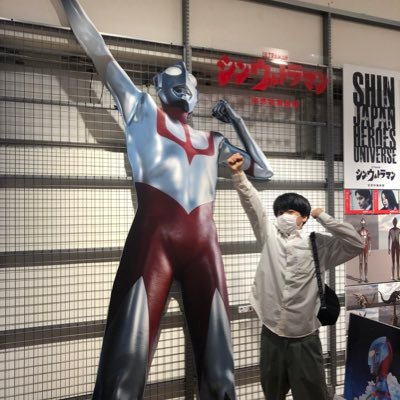

自己紹介

基本情報
- Eiki Soeta 添田英紀
- 1月22日福島県生まれ
- 東京都立大学 システムデザイン研究科 情報科学域 横山研究室 M1
趣味
- 海外サッカー観戦（主にプレミアリーグ）
- 映画鑑賞
- ゲーム
- テニス
- きゅるりんってしてみて
研究
関心事はソーシャルメディアでの人々の振る舞い国内会議(査読なし)
- 添田英紀, 横山昌平. ニュース記事の拡散速度に着目したソーシャルメディア分析, DEIM2024, 2024/03. [pdf]
やってきたこと
個人開発
都立大生向け情報共有サイト石池
2020年公開. Python, Django, PostgreSQL, AWS EC2. 技育展2022出展. 2023年3月, 私の学部卒業に伴いherokuに移行し, 管理者を後輩に譲渡
アルバイト・インターン
松屋 アルバイト
2020年11月から2022年7月まで
株式会社AppBrew アルバイト
2022年6月から2024年7月まで. 使用言語は主にPython
株式会社dely 3daysインターン
2024年8月, 主にRuby(Ruby on Rails)でのバックエンド開発
共同通信 長期インターン
2024年9月に14日間, Python(Flask)を用いてバックエンド開発. その際の記事がこちら
資格等
TOEIC 835点
2023年4月
AtCoder Highest 緑
使用言語はPython. [リンク]
連絡先
メールアドレス: basyakue[at]gmail.com